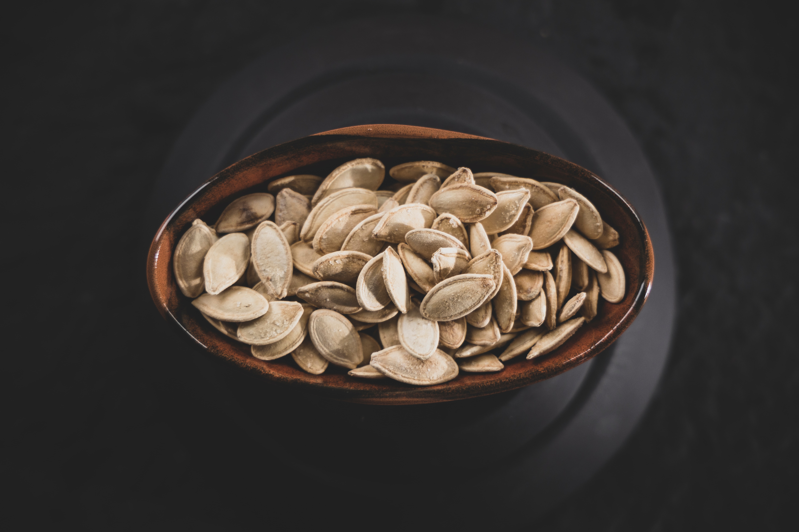

Roasted Pumpkin Seeds

Photo by engin
akyurt on Unsplash
About this Recipe:
A simple snack, roasted pumpkin seeds are the
perfect treat during the fall. While this recipe is
delicious as described, you can also easily substitute
different seasonings to create the perfect match for
your own palate.
Equipment Needed:
- 1 large sheet pan
- 1 large bowl
- 1 small bowl
- Non-stick spray, butter, or parchment
paper
Ingredients Needed:
- 1 pumpkin
- Olive oil
- Kosher salt
- Paprika
- Pepper
- Chili powder
Directions:
- Put non-stick treatment of choice on the sheet pan
- Scrape out the insides of the pumpkin into a large bowl
- Carefully pick out the pumpkin seeds and place them into the small bowl, separating
them from the gooey insides (this will take a while)
- It's OK if some of the goo gets in the bowl; it's inevitable really. Try to
avoid big clumps
- Pre-heat oven to 350 degrees
- Rack position doesn't matter
- Add a couple splashes of olive oil to the small bowl. Don't make the seeds swim but cover them well
- Add the salt, pepper, paprika, and chili powder to the small bowl as well
- Toss the mixture around with your hands until the seeds are evenly coated
- Spread the seeds into the pan in a single layer
- Place the pan into the oven and roast for 20 minutes
- Check the seeds every 5-10 minutes. They should be a golden-brown color when done
- You may need to add 5-8 minutes to the bake time, depending on your oven
- Rinse and dry the small bowl while the seeds are roasting
- Remove the seeds once they're finished roasting and let them rest 2-3 minutes before transferring them back into
the small bowl
- Serve and enjoy